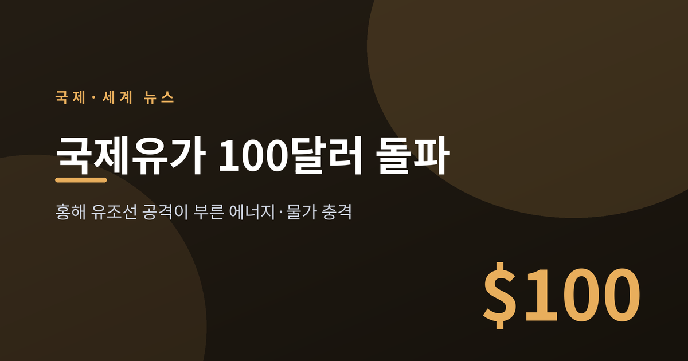
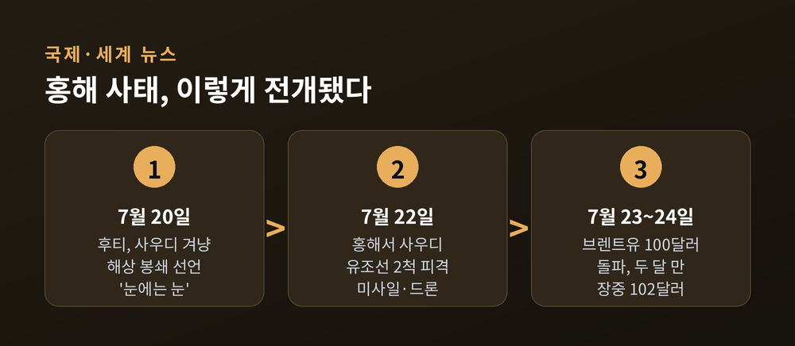
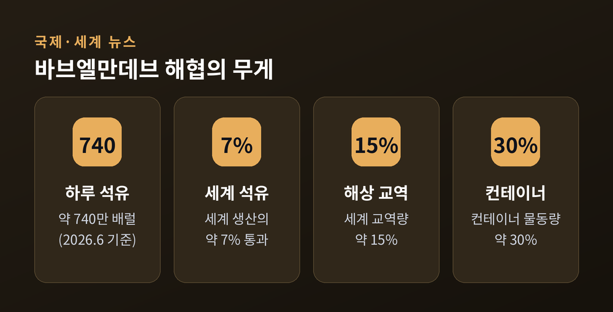
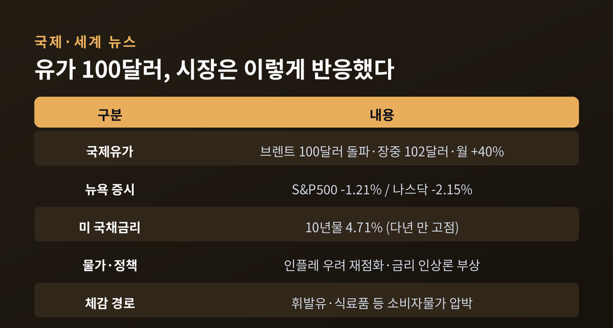
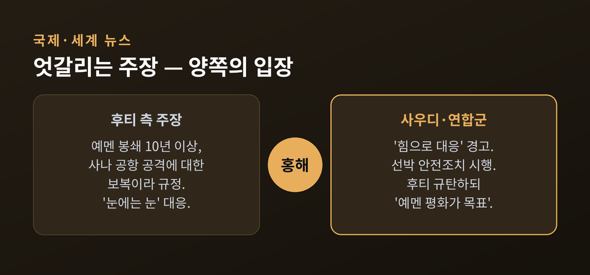
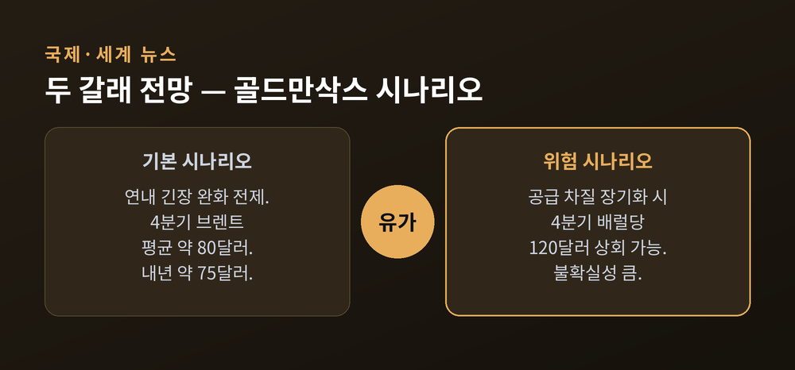

이번 글에서는 국제유가가 배럴당 100달러를 넘어선 사건을 정리해 보겠습니다.
홍해에서 유조선이 공격받았고, 유가는 두 달 만에 세 자리 숫자로 올라섰습니다.
군사적 충돌 자체보다, 이 사건이 에너지 시장과 세계 물가에 남긴 파장에 초점을 맞추려 합니다.
먼저 밝혀 둘 것이 있습니다. 이 글은 정보 전달을 위한 것이며, 특정 자산의 매매나 투자를 권유하는 글이 아닙니다.
2026년 7월 23일, 브렌트유가 배럴당 100달러를 넘었습니다.
약 두 달 만의 일입니다. 5월 말 이후 처음으로 세 자리 숫자에 올라섰습니다.
7월 24일에는 배럴당 100.65달러까지 올랐고, 장중 한때 7% 급등해 102달러 안팎까지 치솟았습니다.
한 달 상승폭만 보면 약 40%입니다. 짧은 기간에 이만큼 오른 것은 흔한 일이 아닙니다.
방아쇠는 홍해에서 당겨졌습니다.
7월 22일, 예멘의 후티 세력이 홍해에서 사우디아라비아 유조선 두 척을 미사일과 드론으로 공격했다고 밝혔습니다. 선박 이름은 엔셀리아와 레일라로 전해졌습니다.
이번 분쟁에서 홍해의 유조선을 직접 겨냥한 첫 사례였습니다. 한 선박의 뱃머리에 불이 붙었지만, 다행히 승조원은 모두 무사했다고 합니다.
앞서 7월 20일에는 후티 군 대변인이 사우디를 겨냥한 해상 봉쇄를 즉시 시행한다고 선언했습니다. 이후 사우디로 향하던 선박 최소 일곱 척이 뱃머리를 돌린 것으로 보도됐습니다.

이 사건이 유독 무겁게 다가오는 이유는 장소에 있습니다.
바브엘만데브 해협. 홍해와 아덴만을 잇는 좁은 길목입니다.
이 해협은 세계 에너지와 물류의 핵심 통로입니다.
2026년 6월 기준, 이곳을 지난 석유는 하루 약 740만 배럴이었습니다. 세계 석유 생산의 약 7%에 해당합니다.
석유만 지나는 곳도 아닙니다. 세계 해상 교역량의 약 15%, 컨테이너 물동량의 약 30%가 이 좁은 물길을 통과합니다. 전자제품, 자동차 부품, 기계, 식량, 비료가 이 길로 오갑니다.
집계 기준에 따라 숫자는 조금씩 다릅니다. 2024년 기준으로는 이 해협을 지난 원유·석유제품이 약 41억 배럴, 세계 전체의 약 5% 수준이었다는 자료도 있습니다. 어느 수치를 보든, 세계 물류가 이 한 곳에 크게 기대고 있다는 사실은 변하지 않습니다.
충격을 키운 배경이 하나 더 있습니다.
앞서 이란이 호르무즈 해협 통항을 제한하자, 사우디는 페르시아만으로 나가던 수출 물량의 70% 이상을 홍해의 얀부항 쪽으로 우회시켜 왔습니다.
예전엔 페르시아만이 주된 길이었습니다. 지금은 그 대안이던 홍해마저 위협받는 처지입니다.
우회로가 막히자, 공급 차질에 대한 시장의 불안은 한층 커졌습니다.

유가가 오르자 시장은 곧바로 반응했습니다.
유가 급등 당일, 뉴욕 증시는 내렸습니다. S&P500 지수는 1.21% 하락한 7,408.30, 나스닥은 2.15% 내린 25,137.69로 마감했습니다.
아시아 증시도 유가 상승과 물가 우려에 함께 약세를 보였습니다.
채권 시장도 출렁였습니다. 미국 10년물 국채 금리는 4.71%까지 올라 여러 해 만의 고점을 기록했습니다.
가장 큰 걱정은 물가입니다.
유가 100달러는 소비자에게는 세금처럼, 기업에는 비용처럼 작용합니다. 경기를 누르면서 물가는 밀어 올리는 셈입니다.
체감으로 이어지는 통로도 분명합니다. 원유값이 오르면 주유소의 휘발유 가격이 뒤따라 오르고, 운송비를 타고 식료품과 공산품 가격에도 스며듭니다. 소비자의 지갑과 기업의 원가가 동시에 눌리는 구조입니다.
중앙은행의 고민은 여기서 깊어집니다. 물가를 잡으려 금리를 올리면 경기가 식고, 경기를 살리려 금리를 낮추면 물가가 다시 튈 수 있습니다.
한동안 잦아들던 금리 인상 기대도 다시 고개를 들었습니다. 미 연방준비제도는 지난달 금리를 동결했지만, 일부 위원은 다음 조치가 인상일 수 있다는 신호를 냈습니다.
이번 주에는 연준과 영란은행 등 주요국 중앙은행의 결정이 줄줄이 예정돼 있습니다. 물가와 성장 사이에서 어려운 판단이 필요한 시점입니다.

민감한 국제 사안입니다. 어느 한쪽으로 단정하기보다, 당사자들의 주장을 그대로 옮겨 보겠습니다.
후티 측은 이번 봉쇄를 보복으로 규정합니다. 예멘에 대한 봉쇄가 10년 넘게 이어졌고, 최근 사나 국제공항이 공격받았다는 것이 이들의 주장입니다. 후티 측 인사는 "부당한 봉쇄"에 맞선 "눈에는 눈"의 대응이라고 표현했습니다.
사우디와 연합군 측은 강하게 반발합니다. 연합군은 "힘으로 대응하겠다"고 경고했고, 자국 선박에 대한 안전 조치를 이미 시행했다고 밝혔습니다. 사우디 외무부는 후티의 행동을 규탄하면서도, 목표는 "예멘의 평화와 예멘 국민의 고통을 끝내는 것"이라고 했습니다.
이번 봉쇄는 이란의 호르무즈 해협 제한과 맞물려, 분쟁이 또 다른 해상 요충지로 번지는 신호로 읽혔습니다.
다만 문이 완전히 닫힌 것은 아닙니다. 파키스탄과 카타르 등 중재국이 휴전을 모색하고 있고, 이란도 중재국의 제안을 받았다고 밝혔습니다.
실제로 유가는 후티 성명 직후 올랐다가, 외교적 돌파구에 대한 기대로 일부 되밀리기도 했습니다. 시장은 뉴스 한 줄에 민감하게 움직이고 있습니다.

전망은 기관마다 갈립니다.
골드만삭스는 두 가지 시나리오를 제시했습니다.
공급 차질이 길어지면 브렌트유가 4분기에 배럴당 120달러를 넘을 수 있다는 것이 위험 시나리오입니다.
반대로 연내에 긴장이 완화된다면, 기본 시나리오에서는 4분기 평균 약 80달러, 내년에는 약 75달러로 내려간다고 봤습니다.
같은 사건을 두고도 결론이 이렇게 다릅니다. 그만큼 불확실성이 크다는 뜻입니다.
한국을 비롯한 아시아에도 부담은 남습니다. 골드만삭스는 중국·한국의 수요 전망을 낮췄고, 한국과 일본은 전략비축유를 방출에서 재비축으로 돌리는 움직임을 보였습니다.
원유 대부분을 수입하는 한국 경제에 유가 상승은 물가와 무역수지의 부담 요인입니다. 기름값이 오르면 수입 대금이 늘고, 원가 부담이 소비자물가로 옮겨 붙기 쉽습니다.
시장의 시선도 두 갈래로 나뉩니다. 사태가 외교로 진정되면 유가는 다시 내려올 수 있습니다. 반대로 봉쇄와 공격이 이어지면 100달러선이 굳어지거나 더 오를 수 있다는 관측이 함께 나옵니다.
아직 결론을 내리기엔 이릅니다. 봉쇄가 풀리는지, 공격이 이어지는지에 따라 유가의 방향은 또 달라질 것입니다.

정리하면 이렇습니다.
좁은 바닷길 하나에서 벌어진 일이, 세계의 주유소 가격과 장바구니 물가로 이어지고 있습니다.
"에너지 안보는 결국 항로의 안보다." 이번 사건이 남긴 한 줄입니다.
유가가 다시 두 자리로 내려올지 물으신다면, 지금은 누구도 단언하기 어렵다고 답하겠습니다.